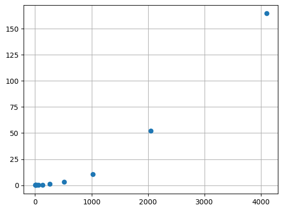
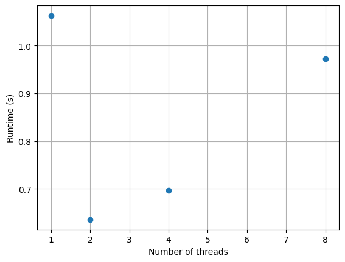

embarassingly parallel: algorithms with a high degree of independence and little communication between parts
Examples: summing large arrays, matrix multiplication, Monte Carlo simulations, some optimization approaches (e.g., stochastic and genetic algorithms)
Other algorithms have unavoidable bottlenecks: inverting a matrix, ODE integration, etc.
Not all hope is lost! Some parts may still benefit from parallelization.
Example: N-body problem
Generalization of the classic two-body problem that governs the equations of motion for two masses. From Newton’s law of gravity:
\[
\frac{dp}{dt} = G \frac{m_1 m_2}{r^2}
\]
Equations of motion
\[
\begin{align}
\mathbf{x}_{i,s} &= G \sum_{j=1, i \neq j} \frac{m_j (\mathbf{x}_{j,s-1} - \mathbf{x}_{i,s-1})}{||\mathbf{x}_{j,s-1} - \mathbf{x}_{i,s-1}||^3} \Delta t^2 + \mathbf{v}_{i,s-1} \Delta t + \mathbf{x}_{i,s-1} \\
\mathbf{v}_{i,s} &= G \sum_{j=1, i \neq j} \frac{m_j (\mathbf{x}_{j,s-1} - \mathbf{x}_{i,s-1})}{||\mathbf{x}_{j,s-1} - \mathbf{x}_{i,s-1}||^3} \Delta t + \mathbf{v}_{i,s-1}
\end{align}
\]
No parallelism
import numpy as npdef remove_i(x, i):"""Drops the ith element of an array.""" shape = (x.shape[0]-1,) + x.shape[1:] y = np.empty(shape, dtype=float) y[:i] = x[:i] y[i:] = x[i+1:]return ydef a(i, x, G, m):"""The acceleration of the ith mass.""" x_i = x[i] x_j = remove_i(x, i) # don't compute on itself m_j = remove_i(m, i) diff = x_j - x_i mag3 = np.sum(diff**2, axis=1)**1.5# compute acceleration on ith mass result = G * np.sum(diff * (m_j / mag3)[:,np.newaxis], axis=0)return result
def timestep(x0, v0, G, m, dt):"""Computes the next position and velocity for all masses given initial conditions and a time step size. """ N =len(x0) x1 = np.empty(x0.shape, dtype=float) v1 = np.empty(v0.shape, dtype=float)for i inrange(N): # update locations for all masses each step a_i0 = a(i, x0, G, m) v1[i] = a_i0 * dt + v0[i] x1[i] = a_i0 * dt**2+ v0[i] * dt + x0[i]return x1, v1def initial_cond(N, D):"""Generates initial conditions for N unity masses at rest starting at random positions in D-dimensional space. """ x0 = np.random.rand(N, D) # use random initial locations v0 = np.zeros((N, D), dtype=float) m = np.ones(N, dtype=float)return x0, v0, m
Generating initial conditions and taking one timestep:
x0, v0, m = initial_cond(10, 2)x1, v1 = timestep(x0, v0, 1.0, m, 1.0e-3)
Driver function that simulates \(S\) time steps:
def simulate(N, D, S, G, dt): x0, v0, m = initial_cond(N, D)for s inrange(S): x1, v1 = timestep(x0, v0, G, m, dt) x0, v0 = x1, v1
import matplotlib.pyplot as pltplt.plot(Ns, runtimes, 'o')plt.grid(True)plt.show()

Does the problem scale quadratically?
Threads
Threads perform work and are not blocked by work of other threads.
Threads can communicate with each other through state
Threads: probably don’t use in Python.
All threads execute in the same process as Python itself.
Where to use? If you have high latency tasks where you can use spare time for another task (e.g., downloading a large file)
N-body with threading
from threading import Threadclass Worker(Thread):"""Computes x, v, and a of the ith body."""def__init__(self, *args, **kwargs):super(Worker, self).__init__(*args, **kwargs)self.inputs = [] # buffer of work for thraedsself.results = [] # buffer of return valuesself.running =True# setting to False causes run() to end safelyself.daemon =True# allow thread to be terminated with Pythonself.start()def run(self):whileself.running:iflen(self.inputs) ==0: # check for workcontinue i, x0, v0, G, m, dt =self.inputs.pop(0) a_i0 = a(i, x0, G, m) # body of original timestep() v_i1 = a_i0 * dt + v0[i] x_i1 = a_i0 * dt**2+ v0[i] * dt + x0[i] result = (i, x_i1, v_i1)self.results.append(result)
Thread pools
Expensive to create and start threads, so create pool that persists.
class Pool(object):"""A collection of P worker threads that distributes tasks evenly across them. """def__init__(self, size):self.size = size# create new workers based on sizeself.workers = [Worker() for p inrange(size)]def do(self, tasks):for p inrange(self.size):self.workers[p].inputs += tasks[p::self.size] # evenly distribute taskswhileany([len(worker.inputs) !=0for worker inself.workers]):pass# wait for all workers to finish results = []for worker inself.workers: # get results back from workers results += worker.results worker.results.clear()return results # return complete list of results for all inputsdef__del__(self): # stop workers when pool is shut downfor worker inself.workers: worker.running =False
def timestep(x0, v0, G, m, dt, pool):"""Computes the next position and velocity for all masses given initial conditions and a time step size. """ N =len(x0) tasks = [(i, x0, v0, G, m, dt) for i inrange(N)] # create task for each body results = pool.do(tasks) # run tasks x1 = np.empty(x0.shape, dtype=float) v1 = np.empty(v0.shape, dtype=float)for i, x_i1, v_i1 in results: # rearrange results (probably not in order) x1[i] = x_i1 v1[i] = v_i1return x1, v1def simulate(P, N, D, S, G, dt): x0, v0, m = initial_cond(N, D) pool = Pool(P)for s inrange(S): x1, v1 = timestep(x0, v0, G, m, dt, pool) x0, v0 = x1, v1
import matplotlib.pyplot as pltplt.plot(Ps, runtimes, 'o')plt.xlabel('Number of threads')plt.ylabel('Runtime (s)')plt.grid(True)plt.show()

Multiprocessing
More like threading available in other languages…
Can’t be used directly from interactive interpreter; main module must be importable by fork processes
Provides Pool class for us, used with powerful map() function.
import numpy as npfrom multiprocessing import Pooldef remove_i(x, i):"""Drops the ith element of an array.""" shape = (x.shape[0]-1,) + x.shape[1:] y = np.empty(shape, dtype=float) y[:i] = x[:i] y[i:] = x[i+1:]return ydef a(i, x, G, m):"""The acceleration of the ith mass.""" x_i = x[i] x_j = remove_i(x, i) # don't compute on itself m_j = remove_i(m, i) diff = x_j - x_i mag3 = np.sum(diff**2, axis=1)**1.5# compute acceleration on ith mass result = G * np.sum(diff * (m_j / mag3)[:,np.newaxis], axis=0)return result# function needs one argumentdef timestep_i(args):"""Worker function that computes the next position and velocity for the ith mass.""" i, x0, v0, G, m, dt = args # unpack arguments to original function a_i0 = a(i, x0, G, m) # body of original timestep() v_i1 = a_i0 * dt + v0[i] x_i1 = a_i0 * dt**2+ v0[i] * dt + x0[i]return i, x_i1, v_i1def timestep(x0, v0, G, m, dt, pool):"""Computes the next position and velocity for all masses given initial conditions and a time step size. """ N =len(x0) tasks = [(i, x0, v0, G, m, dt) for i inrange(N)] results = pool.map(timestep_i, tasks) # replace old do() with Pool.map() x1 = np.empty(x0.shape, dtype=float) v1 = np.empty(v0.shape, dtype=float)for i, x_i1, v_i1 in results: x1[i] = x_i1 v1[i] = v_i1return x1, v1def initial_cond(N, D):"""Generates initial conditions for N unity masses at rest starting at random positions in D-dimensional space. """ x0 = np.random.rand(N, D) # use random initial locations v0 = np.zeros((N, D), dtype=float) m = np.ones(N, dtype=float)return x0, v0, mdef simulate(P, N, D, S, G, dt): x0, v0, m = initial_cond(N, D) pool = Pool(P)for s inrange(S): x1, v1 = timestep(x0, v0, G, m, dt, pool) x0, v0 = x1, v1
How does multiprocessing scale?
from nbody_multiprocessing import simulatePs = np.array([1, 2, 4, 8, 16])runtimes = []for P in Ps: start = time.time() simulate(P, 512, 3, 300, 1.0, 1e-3) stop = time.time() runtimes.append(stop - start)